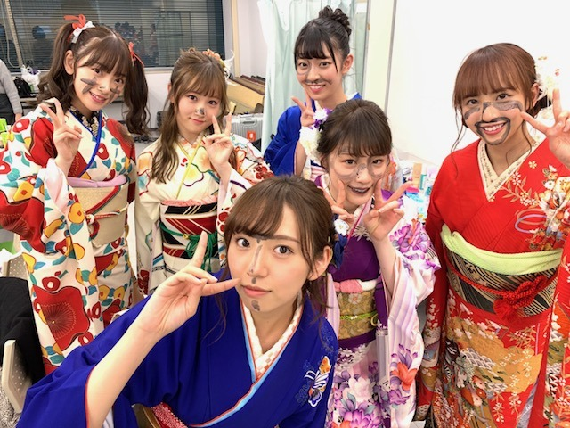
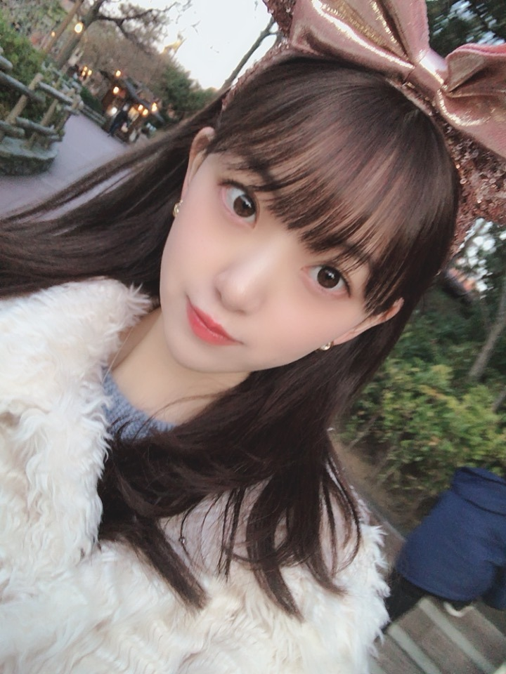

2019/0123Wed今日のこと
今日は
17:30〜のぎおびshowroom配信
23:45〜文化放送レコメンです✨✨
#レコメン女心 つぶやいてね
よろしくです o(^-^)o
だいたいぜんぶ展のパーカー☺︎

Lサイズでだぼっと着ました。
白は今は売り切れみたいですが
黒を着たらあすかとお揃いですよ〜
ぜひともぜひとも
逃げ水の個人tシャツもかわいいので
要checkです☺︎
個人的にはバレッタのタオルがすきです

乃木中見てくださいましたか？
見事に真っ黒。笑
羽子板をやるのは小さい頃以来で
楽しかったです✨


眠れる森の美女のオーロラ姫が
私の中でシンデレラと並ぶくらいに
リスペクトしているディズニープリンセスで、
オーロラ姫風の
黒カチューシャ×巻き下ろしは
最近のお気に入りへアです☺︎
フランスのユッセ城にいつか行きたいな〜って
思います
お姫様は女の子の永遠の憧れだし
いつか白馬の王子様が現れると夢見てます...
でもカメラを向けられると変顔をするあたり
まだまだですな...

ひよこ
では。
2019/01/23 16:12
コメント(354)
こんばんは
今日は一段と、、ほーりーデイですねー！
パーカーは、だぼっと着るのがカワウイね～
未央ちゃんが白着てるから売り切れですよ♡
羽子板対決もとっても楽しかったですよー！
乃木中の新春SPは何度観てても面白いです♪
未央ちゃんはお姫様にも相応しい存在です！
きっと白馬の王子様も照れてしまいますよ♡
未央ちゃんは
乃木坂ニューウェーブのパイオニアであり、
未央ちゃんの成功こそが、
後輩たちの活躍にも繋がっているのです☆
これからも自信を持って、
未央ちゃんの直感を信じ続けて下さいね◎
確かに、ひよこみたいな所も素敵ですよ～☺
今日は一段と、、ほーりーデイですねー！
パーカーは、だぼっと着るのがカワウイね～
未央ちゃんが白着てるから売り切れですよ♡
羽子板対決もとっても楽しかったですよー！
乃木中の新春SPは何度観てても面白いです♪
未央ちゃんはお姫様にも相応しい存在です！
きっと白馬の王子様も照れてしまいますよ♡
未央ちゃんは
乃木坂ニューウェーブのパイオニアであり、
未央ちゃんの成功こそが、
後輩たちの活躍にも繋がっているのです☆
これからも自信を持って、
未央ちゃんの直感を信じ続けて下さいね◎
確かに、ひよこみたいな所も素敵ですよ～☺
showroom 観れました。
良かった。
(^-^)
羽子板って、距離感が独特でなかなか当たらないですよね。
良かった。
(^-^)
羽子板って、距離感が独特でなかなか当たらないですよね。
観ました。堀ちゃん、とても可愛いらしかったですよ。オーロラ姫風の黒カチューシャ×巻き下ろしも最高に可愛いですし、素敵なプリンセスですね。堀ちゃんて、凄く美しくて、本当に素敵だと思います。レコメンも頑張って下さい。応援してます。
SHOWROOM見たよー！
途中までしか見れなかったけど。
SHOWROOM見たあと部活だったけど自分の嫌なところがいっぱい出てた。失敗を恐れてボールをもらいに行かなかったり、すぐボールを取られたり今はいろいろ悩んで考えないといけない時期なのかな？あっ、ちなみにサッカーやってます！
将来プロサッカー選手目指してるから、なれたら1度でもいいから会いたいです。プロサッカー選手になるまでは握手会もライブも行かないって決めてるから行けるようにがんばるから！乃木坂の人達や周りの人達見てたら自分の頑張りや努力が足りないと思う。そういう人達尊敬してるから、その人たちに近づけるように頑張ります！
長文で変な事ばっかり言ってすみませんでした。
でも、言ってることは本当なのでがんばります！
途中までしか見れなかったけど。
SHOWROOM見たあと部活だったけど自分の嫌なところがいっぱい出てた。失敗を恐れてボールをもらいに行かなかったり、すぐボールを取られたり今はいろいろ悩んで考えないといけない時期なのかな？あっ、ちなみにサッカーやってます！
将来プロサッカー選手目指してるから、なれたら1度でもいいから会いたいです。プロサッカー選手になるまでは握手会もライブも行かないって決めてるから行けるようにがんばるから！乃木坂の人達や周りの人達見てたら自分の頑張りや努力が足りないと思う。そういう人達尊敬してるから、その人たちに近づけるように頑張ります！
長文で変な事ばっかり言ってすみませんでした。
でも、言ってることは本当なのでがんばります！
今日もレコメン聞くね！
ザンビ中部でも放送してくれると嬉しいなぁ！
ひよこ未央奈✨
ではまた！
ザンビ中部でも放送してくれると嬉しいなぁ！
ひよこ未央奈✨
ではまた！
やっぱショート派
こんばんは
だいたい全部展のパーカーいいね。
のぎおびの配信お疲れ様でした。
レコメン楽しみです。
いよいよザンビの放送が始まりますね。僕の住んでいる地域は放送の予定がないので、huluの見逃し配信で見ようと思います。こちらも楽しみです。
だいたい全部展のパーカーいいね。
のぎおびの配信お疲れ様でした。
レコメン楽しみです。
いよいよザンビの放送が始まりますね。僕の住んでいる地域は放送の予定がないので、huluの見逃し配信で見ようと思います。こちらも楽しみです。
未央奈ちゃんブログ更新ありがとうございます。未央奈ちゃんとても綺麗です。ドキドキしちゃいます。応援してます
みおな

シュールやねぇ。
パーカーをダボっと着る…メモメモ。
シュールやねぇ。
パーカーをダボっと着る…メモメモ。
ロングかわいいのぉ。
プリンセスは永遠の憧れだよね〜！
わたしはアリエルが1番好き♡♡
シー大好きぃ！！
ディズニー行きたいな〜
インフル流行ってるから体調に
気をつけてね〜！
ばいぃ
チャァオ～～!☆彡
みおちゃん、ヒヨコ可愛いぃ～～～⤴️⤴️❕❤️❤️❤️❤️❤️笑顔
黒いカチューシャのみおちゃん、とっても綺麗だよ～～⤴️⤴️❕❤️❤️❤️❤️❤️笑顔
みおちゃん、カチューシャgoodです❕❤️❤️❤️❤️❤️笑顔
本当に、綺麗可愛いくて素敵だよ～～⤴️⤴️❕❤️❤️❤️❤️❤️笑顔
是非、みおちゃんのカチューシャ写メいっぱいください❕❤️❤️❤️❤️❤️笑顔❤️❤️❤️❤️❤️
ではでは❕❤️❤️❤️❤️❤️笑顔
(*^▽^)/★*☆♪❤️❤️❤️❤️❤️
☆大人しい、おすまし！より☆彡
ブログ更新ありがとうね(*^^*)
未央奈が出演してるのは全てチェックしてるよ(^-^)
乃木中の羽子板めっちゃ面白かったよ(＾∀＾)
サーブミスで落書きされてて(＾∀＾)
未央奈のディズニープリンセス見たいね(^_^)
その時の王子様役はシュワちゃんでね♪ヽ(´▽｀)/
未央奈が出演してるのは全てチェックしてるよ(^-^)
乃木中の羽子板めっちゃ面白かったよ(＾∀＾)
サーブミスで落書きされてて(＾∀＾)
未央奈のディズニープリンセス見たいね(^_^)
その時の王子様役はシュワちゃんでね♪ヽ(´▽｀)/
ブログ更新ありがとうー！！
もう変顔してても可愛い
もう変顔してても可愛い
ひよこな未央奈ちゃん可愛い！
こんばんは。
今夜は、レコメン&ザンビですね。
楽しみですが、レコメンを優先してザンビは録画します。
だいたいぜんぶ展は、まだ行けてないのです...
パーカー、白が見事に映えて似合ってますね。
堀さんと同じ、白が良いです。
再入荷しないかな。
バレッタタオルは、必須ですね。
乃木中の羽子板対決、面白かったです。
墨を塗られる表情が、凄く可愛かったですよ。
それに晴れ着姿、お見事で可愛いかったです。
相変わらずの癒される可愛いさ、美しさの写真をありがとうございます。
堀さんは、癒やし手で我が光、生きる希望です。
今日の日中、自分が疲れ果ててる中、堀さんのモバメのるんるんコメントにどれだけ癒された事か。
以前言われてましたが、金髪も見たいです、もちろんドレスを着て。
ユッセ城でなりきり撮影が、いつかできると良いですね。
変顔は、ご愛嬌、可愛らしいです。
でも、お姫様の資質を充分お待ちですし、これから更にそのオーラを纏うと思いますよ。
４４周年記念の乃木坂ップスターを食べたら、堀さんのサインと「スープは飲み干す派？」のフタで嬉しかったです。
久しぶりのカップスターでしたが、懐かしくもあって、堀さんのるんるんコメントのおかげで、幸福感たっぷりです。
空気が乾燥してますので、風邪やインフルエンザには充分気を付けて下さいね。
お互いに、素敵な春を迎えたいですね。
頑張って行きましょう！
今夜は、レコメン&ザンビですね。
楽しみですが、レコメンを優先してザンビは録画します。
だいたいぜんぶ展は、まだ行けてないのです...
パーカー、白が見事に映えて似合ってますね。
堀さんと同じ、白が良いです。
再入荷しないかな。
バレッタタオルは、必須ですね。
乃木中の羽子板対決、面白かったです。
墨を塗られる表情が、凄く可愛かったですよ。
それに晴れ着姿、お見事で可愛いかったです。
相変わらずの癒される可愛いさ、美しさの写真をありがとうございます。
堀さんは、癒やし手で我が光、生きる希望です。
今日の日中、自分が疲れ果ててる中、堀さんのモバメのるんるんコメントにどれだけ癒された事か。
以前言われてましたが、金髪も見たいです、もちろんドレスを着て。
ユッセ城でなりきり撮影が、いつかできると良いですね。
変顔は、ご愛嬌、可愛らしいです。
でも、お姫様の資質を充分お待ちですし、これから更にそのオーラを纏うと思いますよ。
４４周年記念の乃木坂ップスターを食べたら、堀さんのサインと「スープは飲み干す派？」のフタで嬉しかったです。
久しぶりのカップスターでしたが、懐かしくもあって、堀さんのるんるんコメントのおかげで、幸福感たっぷりです。
空気が乾燥してますので、風邪やインフルエンザには充分気を付けて下さいね。
お互いに、素敵な春を迎えたいですね。
頑張って行きましょう！
みおちゃん、世界で一番かわいい！
迎えに行きまーす
TV･ネット･雑誌掲載...etc 堀ちゃん見れる機会は、毎回全てが楽しみ!!!(≧▽≦) 寒い日が続いてるけど、風邪とかひかないように気をつけながら適度にお仕事頑張ってねぇ(*´-`)ﾉ
お疲れ様です!
墨ついてる未央奈ちゃん可愛い
だいたい全部展のパーカーいい感じですね、ほしいっす。白馬の王子様を求めつつ、変顔のオチなんですね(笑)うける(笑)
みおな、こんばんは。更新ありがとう！ レコメン楽しみにしてます。インフルエンザ流行してますね。御注意下さい！ それともうすぐ花粉の季節ですね暖かくなるのはいいのですが。こちらも御注意下さい！ では、毎日みおなに良いこと沢山ありますように！ おやすみおな！！
白の方が手にしやすかったのかな？
お揃いって･･･何人と？(笑)
羽子板ってやったことないな～
最前線ではしゃぐ人
が上手く見えたけどどうだったのかな～
ピヨピヨ。
お揃いって･･･何人と？(笑)
羽子板ってやったことないな～
最前線ではしゃぐ人
が上手く見えたけどどうだったのかな～
ピヨピヨ。
今日の学校帰りの後はとても楽しみでした！
ありがとーーー！
ありがとーーー！
パーカーの白売り切れたの悲しすぎる、、お揃いの欲しかった、、
乃木中の髪型はホントに可愛い。
堀ちゃん、こんばんわ＼(>ω<)／
フランスならモン・サン・ミッシェルもおすすめだよー。
修学旅行で１回行ったけど、今度はプライベートで行きたいっ！
だいたいぜんぶ展では、まずダンボール箱を２つ買おうと思う♪
あと、なんか折り畳み自転車が売っていたね（笑）
『ハウス！』にちなんで、別荘は売ってないんだっけ？？
フランスならモン・サン・ミッシェルもおすすめだよー。
修学旅行で１回行ったけど、今度はプライベートで行きたいっ！
だいたいぜんぶ展では、まずダンボール箱を２つ買おうと思う♪
あと、なんか折り畳み自転車が売っていたね（笑）
『ハウス！』にちなんで、別荘は売ってないんだっけ？？
更新ありがとう〜
だいたいぜんぶ展行きましたよ！
逃げ水の個別tシャツと白パーカー買ったよお揃いやな笑笑
あとバレッタのタオルも買ったよ！
一つ一つのアルバムを出す裏で台本とかジャケ写の撮り直しいろんな事があって改めてアルバム作るのに時間と体力を使うんだなと思いました！
個人的にシャキイズムのガスマスクと防犯カメラのデザインが好きなので生で見れてよかったですあと逃げ水のいろんな設定とかも詳しくしれて良かったしまたMVが観たくなりました！
昼はオムさんカレーにしました、自分はカレーはご飯よりもナン派なのでとても美味しかった！
2月にまた行きます！
乃木中見たよ、残念だったね負けちゃって見事に真っ黒になっちゃったね♪
僕は羽子板なんてやったこと無いんだよねやってみたいです、テニスとバトミントンと卓球は得意なので初めてでもうまく打ち返せると思うんですけどと言っても羽子板やる予定ないんだけどね笑笑
コメ読みお疲れ様で〜す★
またね〜
だいたいぜんぶ展行きましたよ！
逃げ水の個別tシャツと白パーカー買ったよお揃いやな笑笑
あとバレッタのタオルも買ったよ！
一つ一つのアルバムを出す裏で台本とかジャケ写の撮り直しいろんな事があって改めてアルバム作るのに時間と体力を使うんだなと思いました！
個人的にシャキイズムのガスマスクと防犯カメラのデザインが好きなので生で見れてよかったですあと逃げ水のいろんな設定とかも詳しくしれて良かったしまたMVが観たくなりました！
昼はオムさんカレーにしました、自分はカレーはご飯よりもナン派なのでとても美味しかった！
2月にまた行きます！
乃木中見たよ、残念だったね負けちゃって見事に真っ黒になっちゃったね♪
僕は羽子板なんてやったこと無いんだよねやってみたいです、テニスとバトミントンと卓球は得意なので初めてでもうまく打ち返せると思うんですけどと言っても羽子板やる予定ないんだけどね笑笑
コメ読みお疲れ様で〜す★
またね〜
最近乃木坂で一番すき！
ブログ更新ありがとう！
だいたいぜんぶ展行きます！！
逃げ水のtシャツ買います！！
だいたいぜんぶ展行きます！！
逃げ水のtシャツ買います！！
おつかれさまです！
全部展は春休み行くので、そん時にグッズあることを祈ります
変顔むっちゃおもろい 笑笑
どんどんレパートリー増やしてください！笑笑
体調(特にインフル)に気を付けて頑張ってください
応援してます
全部展は春休み行くので、そん時にグッズあることを祈ります
変顔むっちゃおもろい 笑笑
どんどんレパートリー増やしてください！笑笑
体調(特にインフル)に気を付けて頑張ってください
応援してます
久々にブログ更新ありがと!!
パーカーいいね！！パーカー女子いいと思う(°´˘`°)♡
パーカーいいね！！パーカー女子いいと思う(°´˘`°)♡
未央奈が一番！
白パーカー未央奈！
可愛すぎる
可愛すぎる
のぎおび配信が済んだあとに、今日配信やっていたの知りましたよ！もっとまめに堀ちゃん情報を収集しよ～
王子様になりまする
ほりっぴ～、ナンチです♪
ブログ更新ありがとう～
姫は変顔も似合いますな
だいぜん展行けてない
早く行かねば
パーカーめっちゃ欲しいよ～
ブログ更新ありがとう～
姫は変顔も似合いますな
だいぜん展行けてない
早く行かねば
パーカーめっちゃ欲しいよ～
未央奈！
この前の握手会、だいたいぜんぶ展の白パーカー着ていったよ～。
覚えてるかな。
それと、奇遇にもバレッタのタオル、買ってます！
何か落ち着きのある配色だなぁって思って買いました！
乃木中、羽子板対決おもしろかったです笑
日村チームが負けたのは残念でしたが。
握手会でも色んなヘアスタイルにしてくれるし、服装もかわいいので、いっつもかわいいなと思ってます！
また握手会行きます！
白馬の王子様ね。
あ、それとこの後レコメンもあるけど、ドラマザンビもスタートですね！
楽しみです！
この前の握手会、だいたいぜんぶ展の白パーカー着ていったよ～。
覚えてるかな。
それと、奇遇にもバレッタのタオル、買ってます！
何か落ち着きのある配色だなぁって思って買いました！
乃木中、羽子板対決おもしろかったです笑
日村チームが負けたのは残念でしたが。
握手会でも色んなヘアスタイルにしてくれるし、服装もかわいいので、いっつもかわいいなと思ってます！
また握手会行きます！
白馬の王子様ね。
あ、それとこの後レコメンもあるけど、ドラマザンビもスタートですね！
楽しみです！
可愛すぎるやん笑
だいたいぜんぶ展行ったよー！
今度もう一回行く予定だけど、
次はTシャツ買っちゃおうかなぁ…♡
今度もう一回行く予定だけど、
次はTシャツ買っちゃおうかなぁ…♡
こんばんみーお♪
ブログありがとう！！
今夜、楽しみやなぁ〜♪♪
楽しみ
楽しみ！
楽しみ！！！！！！
わたる⊿
ブログありがとう！！
今夜、楽しみやなぁ〜♪♪
楽しみ
楽しみ！
楽しみ！！！！！！
わたる⊿
堀ちゃん
今日もお疲れ様です
5時半はほぼ100%仕事なのに今日だけ奇跡的に時間が空いていて、のぎおび配信を観る事が出来ました（本当の本当に奇跡）
書き初めは前向きという事で、無理のない程度でポジティブに頑張って下さい
だいたいぜんぶ展は先週の木曜日に行ってきました（前回のコメント読んでくれてたら予定通り行けましたよ）
まだ行った事ない人がいるとネタバレになるからあんまり言いませんけど、すごい興味深かったです
まいやんの特大パネルは目に焼き付けて、たくさんあった衣装もとても貴重な見学でした
MVの細かい設定とかも「へー」となる事がたくさんあって楽しかったです
グッズ売り場もたくさん種類があって困っちゃった笑（買わない予定の物も買ってしまった笑）
カフェでは唐揚げ姉妹プレートを食べました
美味しかったしインスタやってないけどインスタ映えしそうな感じでした
心の底から行けて良かったです
乃木中は、声の調子が優れなかったみたいだけど、楽しく汚れていてホッとしました（面白かったですよ）
最後の変顔写真が今回の写真で一番好きです（変顔なのに可愛いって反則です）
もうすぐレコメン聴きますので頑張って下さい
その後のザンビも睡魔を撃退して観るね（睡魔に負けたらHuluに助けてもらうね）
長くなりましたがありがとうございました
今日もお疲れ様です
5時半はほぼ100%仕事なのに今日だけ奇跡的に時間が空いていて、のぎおび配信を観る事が出来ました（本当の本当に奇跡）
書き初めは前向きという事で、無理のない程度でポジティブに頑張って下さい
だいたいぜんぶ展は先週の木曜日に行ってきました（前回のコメント読んでくれてたら予定通り行けましたよ）
まだ行った事ない人がいるとネタバレになるからあんまり言いませんけど、すごい興味深かったです
まいやんの特大パネルは目に焼き付けて、たくさんあった衣装もとても貴重な見学でした
MVの細かい設定とかも「へー」となる事がたくさんあって楽しかったです
グッズ売り場もたくさん種類があって困っちゃった笑（買わない予定の物も買ってしまった笑）
カフェでは唐揚げ姉妹プレートを食べました
美味しかったしインスタやってないけどインスタ映えしそうな感じでした
心の底から行けて良かったです
乃木中は、声の調子が優れなかったみたいだけど、楽しく汚れていてホッとしました（面白かったですよ）
最後の変顔写真が今回の写真で一番好きです（変顔なのに可愛いって反則です）
もうすぐレコメン聴きますので頑張って下さい
その後のザンビも睡魔を撃退して観るね（睡魔に負けたらHuluに助けてもらうね）
長くなりましたがありがとうございました
いつもブログありがとう！
だいたいぜんぶ展のパーカー欲しいな。
黒も良いけど、未央奈とお揃いが良いから、白が入荷されるまで待ちます笑
カメラを向けられて変顔する未央奈が好きです！笑
眠れる森の美女は私も好きです！
私は王子目線ですが、姫を守るために戦うのはシンプルで好きです。
インフルエンザが流行ってきたみたいなので、体には十分に気をつけてくださいね！
今夜からのザンビも楽しみにしてます。
同じ岐阜県出身としていつも誇りに思ってます。
頑張ってくださいね！
だいたいぜんぶ展のパーカー欲しいな。
黒も良いけど、未央奈とお揃いが良いから、白が入荷されるまで待ちます笑
カメラを向けられて変顔する未央奈が好きです！笑
眠れる森の美女は私も好きです！
私は王子目線ですが、姫を守るために戦うのはシンプルで好きです。
インフルエンザが流行ってきたみたいなので、体には十分に気をつけてくださいね！
今夜からのザンビも楽しみにしてます。
同じ岐阜県出身としていつも誇りに思ってます。
頑張ってくださいね！
ブログ更新ありがとう✨✨
だいたいぜんぶ展行きたい〜
パーカーいいよね！！買いたいよ…
乃木中見たよー！羽子板やってる未央奈可愛かった！！羽子板難しいよね…ｗ
ツインテールもめっちゃ可愛かったぁ
そのオーロラ姫風のヘアもめっちゃ可愛い！！似合ってるし！！
またブログ更新楽しみにしてるね！！✨✨
( ' ∇ ' )/ｶﾞﾝﾊﾞﾚｰ未央奈❤
だいたいぜんぶ展行きたい〜
パーカーいいよね！！買いたいよ…
乃木中見たよー！羽子板やってる未央奈可愛かった！！羽子板難しいよね…ｗ
ツインテールもめっちゃ可愛かったぁ
そのオーロラ姫風のヘアもめっちゃ可愛い！！似合ってるし！！
またブログ更新楽しみにしてるね！！✨✨
( ' ∇ ' )/ｶﾞﾝﾊﾞﾚｰ未央奈❤
少し控えめの変顔に、ん？と一瞬物足りなさを感じたけど、ひよこの一言に、飲んでいたコーヒーを危うく吹き出しそうになりました‥。さすが未央奈！可愛いだけじゃないお茶目なところも大好きです。
こんばんは！
だいたいぜんぶ展行くのまだ先だけど、めっちゃ楽しみにしてる
乃木中は未央奈の声ガラガラだったけど、それが逆に可愛く思えた(笑)
チェッコリ玉入れの時、メンバーと一緒に振りをしていて楽しそうだったね
未央奈の髪、綺麗
未央奈にもいずれ、白馬の王子様が現れるさ
ひよこ・・・ぽい(笑)
またねっ！
だいたいぜんぶ展行くのまだ先だけど、めっちゃ楽しみにしてる
乃木中は未央奈の声ガラガラだったけど、それが逆に可愛く思えた(笑)
チェッコリ玉入れの時、メンバーと一緒に振りをしていて楽しそうだったね
未央奈の髪、綺麗
未央奈にもいずれ、白馬の王子様が現れるさ
ひよこ・・・ぽい(笑)
またねっ！
ブログ更新ありがとう
ひよこ姿の未央奈めっちゃかわいいよ
乃木中のツインテール
めちゃめちゃ似合ってたよ
握手会の時もツインがいいなー
ザンビ絶対見るよー
これからもがんばれファイト
ひよこ姿の未央奈めっちゃかわいいよ
乃木中のツインテール
めちゃめちゃ似合ってたよ
握手会の時もツインがいいなー
ザンビ絶対見るよー
これからもがんばれファイト
堀ちゃん可愛い
生ちゃんじゃないけと、そろそろ堀ちゃんも２枚目の写真集が出るといいですね(^_^)
というよりも今年は映画初主演もあるから、写真集のお話もまんざらじゃないですね(^_^)
というよりも今年は映画初主演もあるから、写真集のお話もまんざらじゃないですね(^_^)


ねぇーって言ってもらいたい人生。笑笑